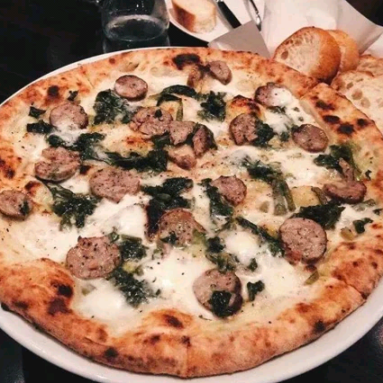
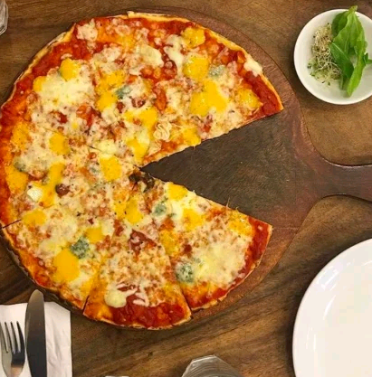
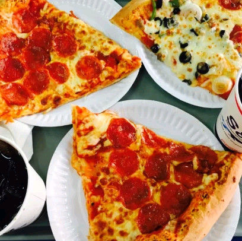
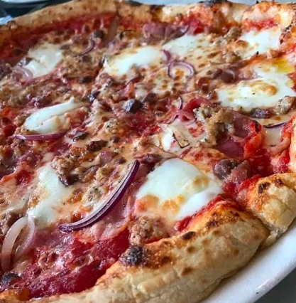
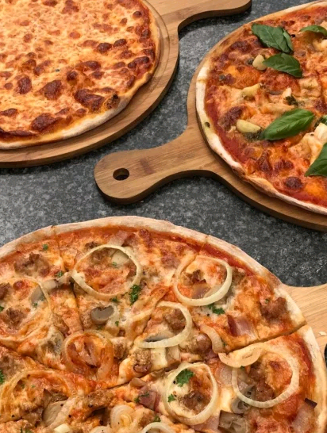
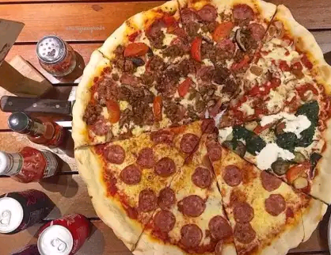
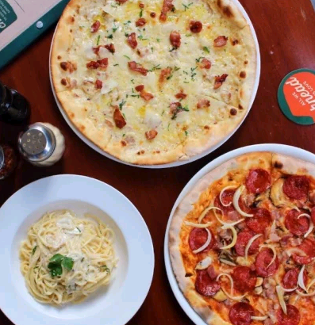
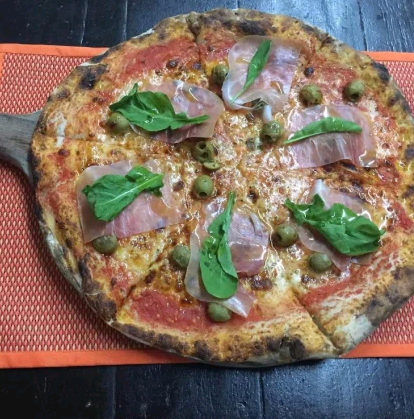
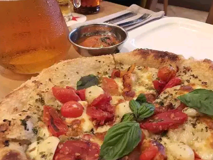

ℭhiℒay's ℘izza
ℭhiℒay's ℘izza

Gino’s Brick Oven Pizza
For those working in Makati, try having lunch or dinner here with your officemates. There’s always something very homey about its casual yet classy interiors. A small yet intimate joint, you can always go here for a quick and affordable pizza fix. For something light, try out their take on mouthwatering Four Cheese Pizza (blue cheese, mozzarella, parmesan, and ricotta). Throw Bianca Verde Pizza in there too that’s rich in basil, arugula, and kesong puti. Skipping diet means you must try their sweet-meets-savory Bacon Gouda Pizza and popular SMEGG (sausage, mushroom, and egg). Drizzle some of their signature spicy honey condiment and you’ll be hooked! You might think ordering a pizza straight from the brick oven might take a long time. That’s not the case here. Surprisingly, their friendly staff and speedy service are highly commendable!

Salvatore Cuomo & Bar
The giant windows lead to a sophisticated and fine dining kind of restaurant. Make that next celebration worthwhile by spoiling the family here. A bit on the high end, you can expect nothing but the best from an international chain. If you want to get your hands on the real deal, Salvatore Cuomo & Bar specializes in Neapolitan pizzas. For the ultimate cheese experience, let your taste buds doing the exploring when it comes to Quattro Formaggi Pizza . Sprinkle some honey there. You’ll be surprised how delicate the pizza dough is once it hits the roof of your mouth.

Mama Lou’s Italian Kitchen
If there’s one thing that the South is known for, it’s definitely Mama Lou’s and her charm. Another residence-turned-restaurant, it feels as though you’re stopping by your tita’s house. Mama Lou’s has some of the best pizzas in Manila especially when it comes to thin crusts. Love mangoes on your pizza? Why not give it a try with Mama Lou’s Special Pizza ? It sounds bizarre but it’s packed with all the right flavors. Another favorite is Pizza Bianca bedazzled with bacon, cream, mozzarella, and mushrooms. With this one, you don’t know when to stop since its very essence is light and crisp. Can’t make a trip down south? It’s a good thing they have branches up north in Pasig City and Quezon City.

S&R New York Style Pizza
Long lines at this place is always a good thing. Why? That’s a sign that means the food is worth the wait. When you chance upon a little to no line, make a beeline directly for S&R. With this one, bigger is always better especially when it comes to serving. A single slice will always leave you bitin, which is why ordering the entire thing is mandatory. We definitely love the generous toppings when it comes to their Pepperoni Pizza and Garlic Shrimp Pizza . If you’re big on condiments, enjoy unlimited refills when it comes to onions and pickles aside ketchup, mustard, and mayo.

Motorino Pizza
This is probably the only restaurant wherein your eyes go directly to their large wood fire oven. Hunting for that legit pizza that has all high quality and fresh ingredients? Imagine all of that coming out from a smoking oven. Order a plate of Pizza Margherita or Prosciutto Pizza to experience it for yourself. You can tell by its soft yet crunchy crust that the dough is definitely handmade. Nothing is overdone and there is a great tasting harmony among the ingredients of these best pizzas in Manila.

Stephen’s Brick Oven Pizza
Arguably one of the most reasonably priced pizzerias in the city, it doesn’t scrimp on ingredients. Throw in the fact that it’s been baked in a brick oven. Out of 15 flavors on the menu, Italian Job and Crusty Crustacean catches our eye. Italian Job consists of your favorite Italian sausage paired with bell peppers and caramelized onions. Seafood enthusiasts will crave for shrimp and anchovies. Let’s not forget the three kinds of cheese used, which are fontina, mozzarella, and parmesan. For something out of the ordinary, adventurous taste buds will settle for something sweet like BRB or S’mores.

Nolita
Though it stands for North of Little Italy, it’s actually more American than its roots. With these humongous New York-style pizza slices, you need to fold it in half and have a go at it. Never mind the oil trickling down your chin because that’s all part of the experience. If you want something that’s simple and straightforward, try their Regular Cheese Pizza . It has the right balance between the gooey cheese, rich tomato sauce, and of course, the fluffy dough. Interesting flavors like Artichoke Pizza and Buffalo Chicken (with the option of Blue Cheese) might catch your attention. Head here early because once their ingredients are used up, the menu gets limited towards the end of the day. Nolita is one of the staples of best pizzas in Manila!

Peperoni Pizzeria
Its Instagram-worthy interiors and popping colors scream for attention. The restaurant is spacious, perfect for families and large groups. Some people might find it weird combining sweet and savory. The only exception here is none other than Bacon Miele Pizza . Who knew bacon, honey, and gouda cheese can work so well together? Order the best pizzas in Manila in Large and XXL and split it into two flavors of your preference. Prosciutto Crudo Di Parma is not to be missed because of how the arugula contrasts with salty cured ham.

Trattoria Altrove
Another gem located in the south, Trattoria Altrove promises to sweep you off your feet. Well actually, before you step foot inside, you’ll need to remove your shoes first. A must try experience especially not that many restaurants do that. It has the same concept with their original restaurant located in El Nido, Palawan. But it’s one of the best pizzas in Manila too! The ambiance is intimate, perfect for dates or a quick get together with your girlfriends. It’s like sitting inside a giant treehouse surrounded by lush greenery. If you don’t want to feel bloated, try their version of Pizza Bianca as it’s very light on your stomach. Procuito Crudo Con Tartufo is ideal for those who are looking for

Stella
Like most BGC restaurants, you need to be willing to shell out money for this one. The interiors are quite posh, a perfect place to bring your date or family to. Rich in flavor, Roasted Truffle Mushroom Pizza delivers an abundance in toppings capped off by the thin and crispy crust. Carnivores will be lucky to feast on their all-meat Butcher’s Best Pizza , full of smoky bacon, sausage, and pepperoni.